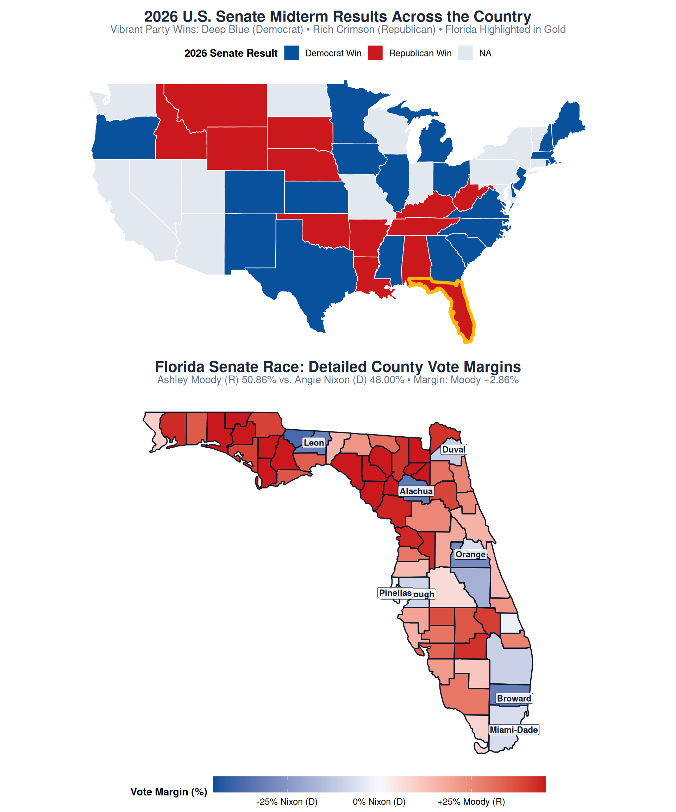

Code
library(tidyverse)
library(patchwork)
library(plotly)
# Load data extracted from Fox News
fl_senate <- read_csv("data/florida_senate_2026.csv")
us_senate <- read_csv("data/us_senate_2026.csv")Student
In the November 2026 midterm elections, Florida hosted a pivotal U.S. Senate special election between incumbent Ashley Moody (Republican) and state representative Angie Nixon (Democrat).
Statewide, Ashley Moody won with 50.86% (4,211,733 votes) to Angie Nixon’s 48.00% (3,975,375 votes)—a tight +2.86% Republican margin.
This report visualizes the 2026 Senate race nationwide, highlights Florida’s position on the national board, and explores Florida’s county-by-county voting patterns in detail.
Here we combine a national map showing all 35 contested Senate seats with an expanded, high-resolution view of Florida’s 67 counties using a vivid election color scheme.
# 1. Prepare US map data
state_lookup <- tibble(
state = state.abb,
region = tolower(state.name)
)
us_map_data <- map_data("state") |>
left_join(state_lookup, by = "region") |>
left_join(us_senate, by = "state")
# National map with high-contrast colors and gold Florida highlight
p_us <- ggplot() +
geom_polygon(
data = us_map_data,
aes(x = long, y = lat, group = group, fill = winner_party),
color = "white",
linewidth = 0.35
) +
# Bold glowing amber highlight around Florida
geom_polygon(
data = us_map_data |> filter(region == "florida"),
aes(x = long, y = lat, group = group),
color = "#FFB703",
fill = NA,
linewidth = 1.6
) +
scale_fill_manual(
values = c("D" = "#08519C", "R" = "#CB181D"),
na.value = "#E2E8F0",
labels = c("D" = "Democrat Win", "R" = "Republican Win", "No 2026 Senate Race"),
name = "2026 Senate Result"
) +
coord_quickmap() +
theme_void(base_size = 12) +
theme(
legend.position = "top",
legend.title = element_text(face = "bold", size = 11),
plot.title = element_text(face = "bold", size = 16, hjust = 0.5, color = "#1E293B"),
plot.subtitle = element_text(color = "#64748B", size = 11, hjust = 0.5, margin = margin(b = 10))
) +
labs(
title = "2026 U.S. Senate Midterm Results Across the Country",
subtitle = "Vibrant Party Wins: Deep Blue (Democrat) • Rich Crimson (Republican) • Florida Highlighted in Gold"
)
# 2. Prepare Florida county map data
fl_counties <- map_data("county", region = "florida") |>
mutate(county = str_to_title(subregion)) |>
left_join(fl_senate |> mutate(county = str_to_title(county)), by = "county")
# Key metro county centroids for clean labels
key_centroids <- fl_counties |>
filter(county %in% c("Miami-Dade", "Broward", "Orange", "Hillsborough", "Duval", "Pinellas", "Leon", "Alachua")) |>
group_by(county) |>
summarize(long = mean(long), lat = mean(lat), .groups = "drop")
# Florida detailed county map with a rich divergent color scale
p_fl <- ggplot() +
geom_polygon(
data = fl_counties,
aes(x = long, y = lat, group = group, fill = rep_margin),
color = "white",
linewidth = 0.35
) +
geom_polygon(
data = fl_counties,
aes(x = long, y = lat, group = group),
color = "#0F172A",
fill = NA,
linewidth = 0.6
) +
# Clear readable labels with contrasting white backing
geom_label(
data = key_centroids,
aes(x = long, y = lat, label = county),
size = 3.2,
fontface = "bold",
color = "#0F172A",
fill = alpha("white", 0.85),
label.size = 0.2,
label.padding = unit(0.15, "lines")
) +
scale_fill_gradient2(
low = "#08519C",
mid = "#F8FAFC",
high = "#CB181D",
midpoint = 0,
limits = c(-45, 45),
oob = scales::squish,
name = "Vote Margin (%)",
labels = \(x) paste0(ifelse(x > 0, "+", ""), round(x), "% ", ifelse(x > 0, "Moody (R)", "Nixon (D)"))
) +
coord_quickmap() +
theme_void(base_size = 12) +
theme(
legend.position = "bottom",
legend.title = element_text(face = "bold", size = 11),
legend.key.width = unit(2.5, "cm"),
plot.title = element_text(face = "bold", size = 16, hjust = 0.5, color = "#1E293B"),
plot.subtitle = element_text(color = "#64748B", size = 11, hjust = 0.5, margin = margin(b = 10))
) +
labs(
title = "Florida Senate Race: Detailed County Vote Margins",
subtitle = "Ashley Moody (R) 50.86% vs. Angie Nixon (D) 48.00% • Margin: Moody +2.86%"
)
# Combine both maps using patchwork
p_combined <- p_us / p_fl + plot_layout(heights = c(1, 1.3))
p_combined
Hover over any county to inspect the exact vote tallies, percentage shares, and the final margin.
# Tooltip text for interactive inspection
fl_counties_interactive <- fl_counties |>
mutate(
tooltip = paste0(
"<b>", county, " County</b><br>",
"Ashley Moody (R): ", scales::comma(moody_votes), " (", moody_pct, "%)<br>",
"Angie Nixon (D): ", scales::comma(nixon_votes), " (", nixon_pct, "%)<br>",
"Margin: ", ifelse(rep_margin > 0, paste0("Moody +", rep_margin, "%"), paste0("Nixon +", abs(rep_margin), "%"))
)
)
p_interactive <- ggplot(fl_counties_interactive, aes(x = long, y = lat, group = group, fill = rep_margin, text = tooltip)) +
geom_polygon(color = "white", linewidth = 0.25) +
scale_fill_gradient2(
low = "#08519C",
mid = "#F8FAFC",
high = "#CB181D",
midpoint = 0,
limits = c(-45, 45),
oob = scales::squish,
name = "Margin (%)"
) +
coord_quickmap() +
theme_void() +
labs(title = "Hover over any Florida county for full vote breakdown")
ggplotly(p_interactive, tooltip = "text")The table below highlights Florida’s largest and closest counties that determined the outcome:
fl_senate |>
select(county, moody_votes, nixon_votes, moody_pct, nixon_pct, rep_margin, winner) |>
arrange(abs(rep_margin)) |>
slice_head(n = 10) |>
knitr::kable(
col.names = c("County", "Moody (R) Votes", "Nixon (D) Votes", "Moody %", "Nixon %", "Margin (%)", "Winner"),
caption = "Top 10 Closest Florida Counties in the 2026 Senate Special Election"
)| County | Moody (R) Votes | Nixon (D) Votes | Moody % | Nixon % | Margin (%) | Winner |
|---|---|---|---|---|---|---|
| Pinellas | 197538 | 200207 | 48.93 | 49.59 | -0.66 | Democrat |
| St Lucie | 67122 | 70412 | 48.25 | 50.61 | -2.36 | Democrat |
| Polk | 136183 | 119100 | 52.73 | 46.12 | 6.61 | Republican |
| Seminole | 90133 | 103330 | 46.08 | 52.83 | -6.75 | Democrat |
| Miami-Dade | 359992 | 416036 | 45.87 | 53.01 | -7.14 | Democrat |
| Monroe | 17450 | 14593 | 53.93 | 45.10 | 8.83 | Republican |
| Hillsborough | 232131 | 278799 | 44.89 | 53.91 | -9.02 | Democrat |
| Escambia | 63160 | 51944 | 54.22 | 44.59 | 9.63 | Republican |
| Palm Beach | 253054 | 311716 | 44.33 | 54.60 | -10.27 | Democrat |
| Duval | 158152 | 197618 | 44.03 | 55.02 | -10.99 | Democrat |